WeDo Web 使用教學
請選擇你使用的裝置：
打開 Bluefy，允許使用藍牙
第一次打開時，會詢問「Bluefy 想要使用藍牙」，請按 允許。
如果不小心按了「不允許」：到 設定 → Bluefy，把「藍牙」打開。
在 Bluefy 輸入網址
點 Bluefy 上方的網址列，輸入：
https://wedo.funrobot.tw/或用相機掃這個 QR Code（如果跳到 Safari，就把網址複製到 Bluefy）：
建議把網址加入 Bluefy 的書籤，下次就不用再輸入。
建立專案
看到「我的專案」首頁後，點綠色的 ＋ 新專案 進入寫程式的畫面。
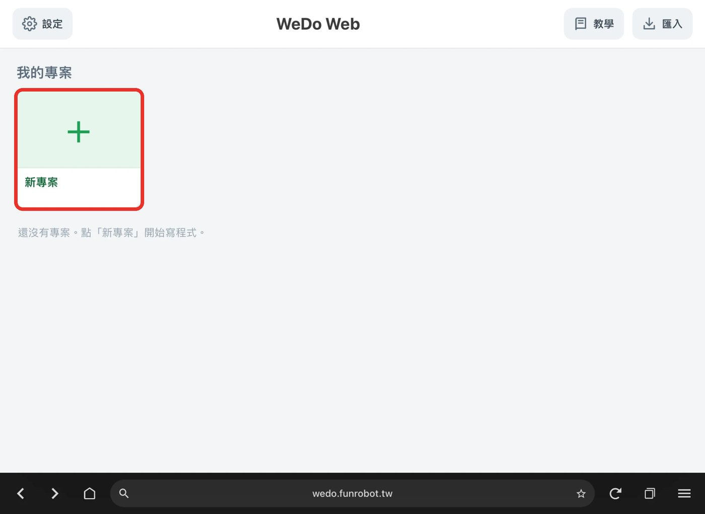
程式會自動儲存，不用按儲存。左上角的 🏠 可以回到首頁。
連接 WeDo 2.0 主機
① 打開主機電源：按主機上的綠色按鈕，主機燈號會白光閃爍（閃兩下、停約 0.5 秒，重複）。
② 點畫面右上角藍色的主機圖示（顯示「未連線」）。
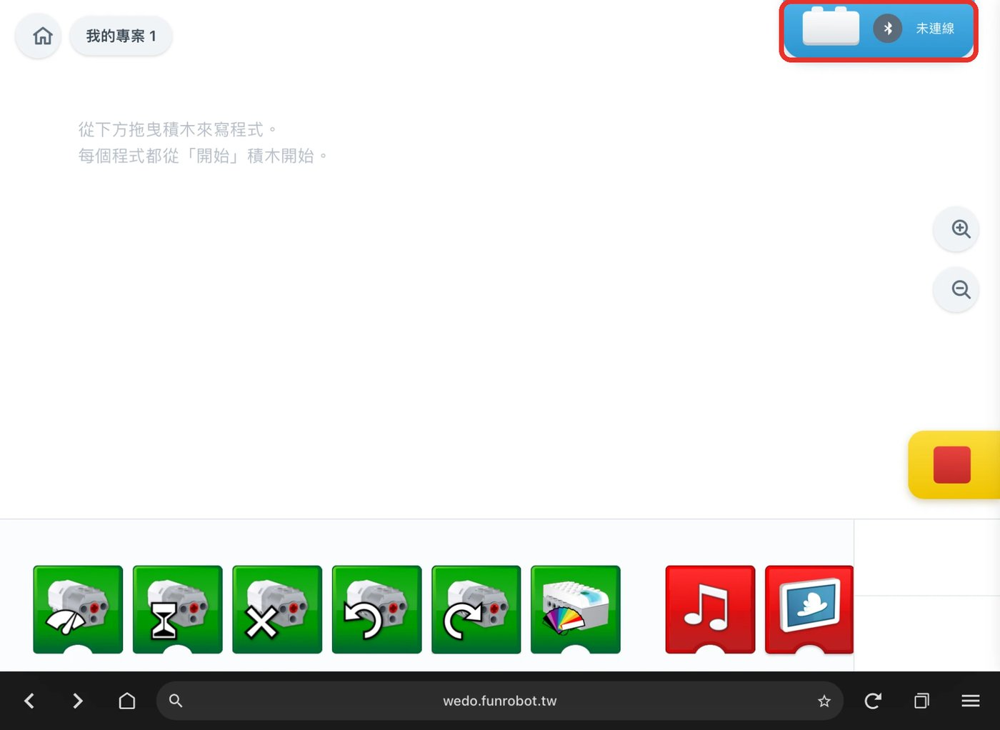
③ 右邊滑出「選擇 Smarthub」，點中間的 箭頭按鈕。
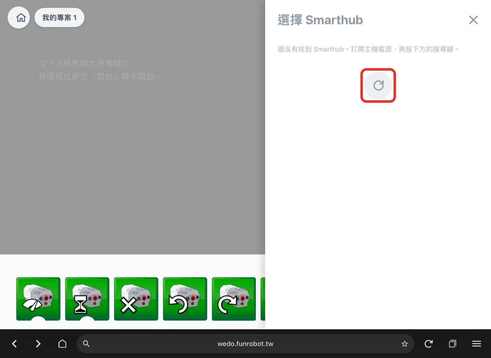
④ Bluefy 跳出「Select device」視窗，點選你的主機。下方的開關維持原本的設定即可。
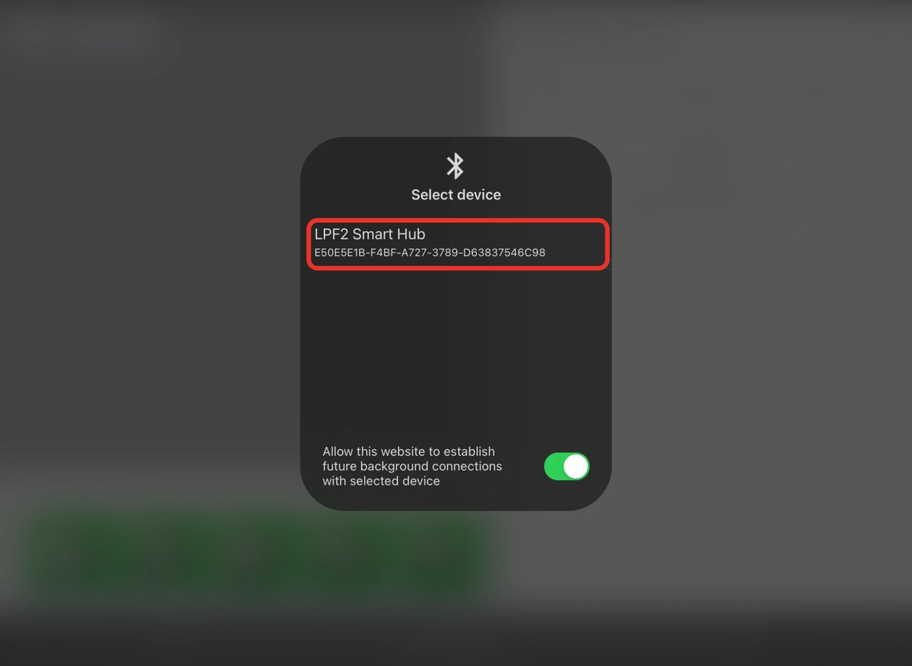
這個視窗顯示的名稱可能跟主機實際的名稱不同。例如截圖中視窗顯示「LPF2 Smart Hub」，連上後 WeDo Web 顯示的是這台主機的名稱「FUN02」。
⑤ 主機出現在「選擇 Smarthub」清單裡並變成綠色，就是連上了。綠色列上會顯示主機名稱和電量；✏️ 可以幫主機改名，紅色 ✕ 是中斷連線。
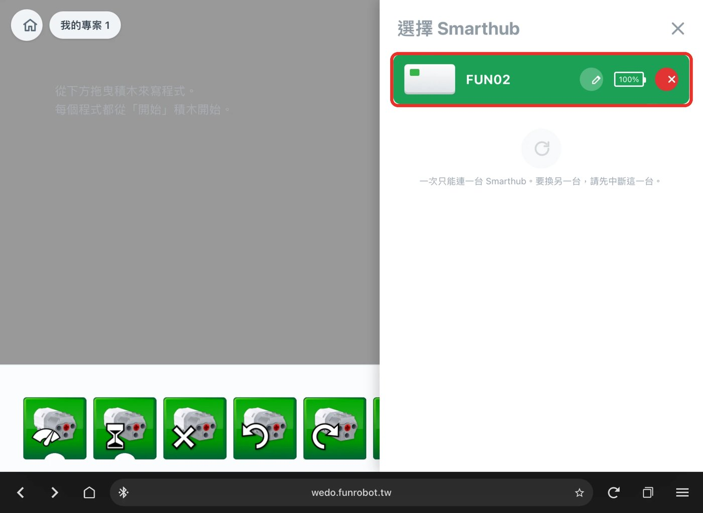
畫面右下角會顯示 Port 1、Port 2 接了什麼（馬達、傾斜感測器、距離感測器）和目前的數值。
開始寫程式
從下方把積木往上拖到畫面中，每個程式都從黃色的「開始」積木開始。點一下「開始」積木就會執行，右下角的紅色方塊是停止。
遇到問題
按 後找不到主機
- 確認主機有開機、電池有電（燈在閃）。
- 一台主機同時只能連一台裝置。請先關掉官方 WeDo App 或其他平板的連線。
- 到 設定 → Bluefy，確認「藍牙」有打開。
- 關掉主機電源再打開，重新搜尋。
網頁一片空白
確認網址是 https:// 開頭，並且是在 Bluefy 裡打開，不是 Safari。
馬達不會轉
- 看畫面右下角，Port 1 或 Port 2 有沒有出現馬達圖示。沒有的話，拔插一次馬達的線。
- 確認程式是從「開始」積木開始，並且有點「開始」執行。
聲音感測器沒反應
聲音感測器用的是裝置的麥克風。第一次使用時要按「允許」；如果按了不允許，到 設定 → Bluefy 打開「麥克風」。
查看連線紀錄
首頁 ⚙ 設定 → 開發者模式選「開」。之後點右上角主機圖示，下方會出現連線紀錄，按「Copy」可以複製下來回報問題。
打開藍牙
從螢幕上方往下滑，打開 藍牙。不需要打開定位。
在 Chrome 輸入網址
點 Chrome 上方的網址列，輸入：
https://wedo.funrobot.tw/或用相機掃這個 QR Code，選擇用 Chrome 開啟：
建議按 Chrome 右上角的 ⋮ → 加到主畫面，之後就能像 App 一樣從主畫面打開。部分手機沒有這個選項（例如 Honor MagicOS 10），請改把網址加入 Chrome 書籤。
建立專案
看到「我的專案」首頁後，點綠色的 ＋ 新專案 進入寫程式的畫面。
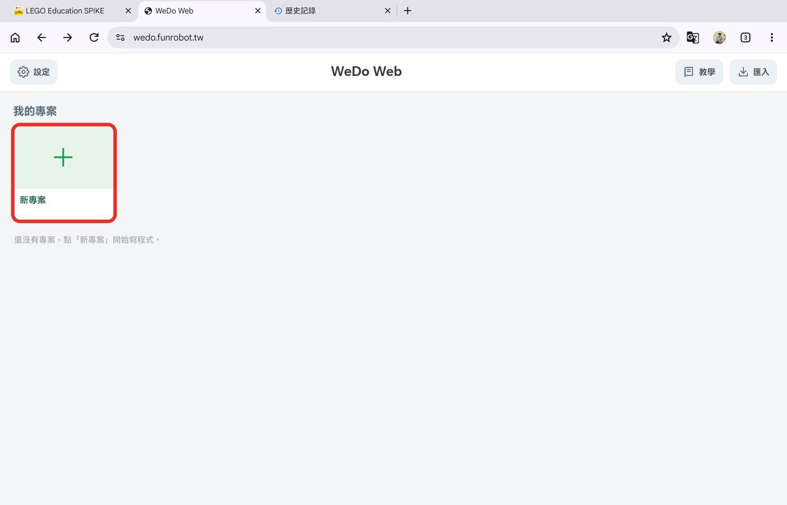
程式會自動儲存，不用按儲存。左上角的 🏠 可以回到首頁。
連接 WeDo 2.0 主機
① 打開主機電源：按主機上的綠色按鈕，主機燈號會白光閃爍（閃兩下、停約 0.5 秒，重複）。
② 點畫面右上角藍色的主機圖示（顯示「未連線」）。
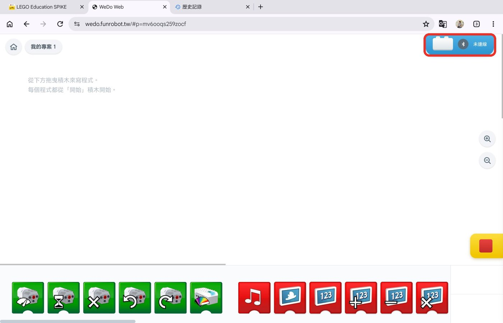
③ 右邊滑出「選擇 Smarthub」，點中間的 箭頭按鈕。第一次會詢問是否允許 Chrome 使用「附近的裝置」，請按 允許。
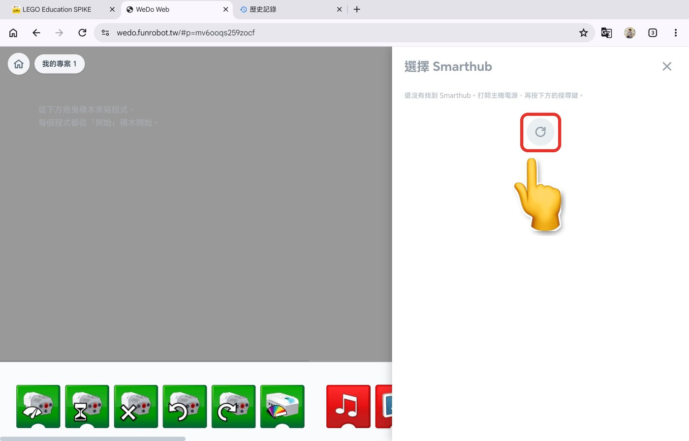
④ Chrome 跳出「https://wedo.funrobot.tw 要求配對」視窗，點選你的主機。視窗下方顯示「正在掃描裝置…」時，主機可能要等幾秒才會出現。
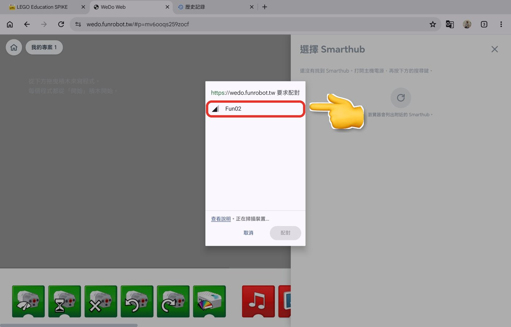
⑤ 主機變成反白後，按 配對。
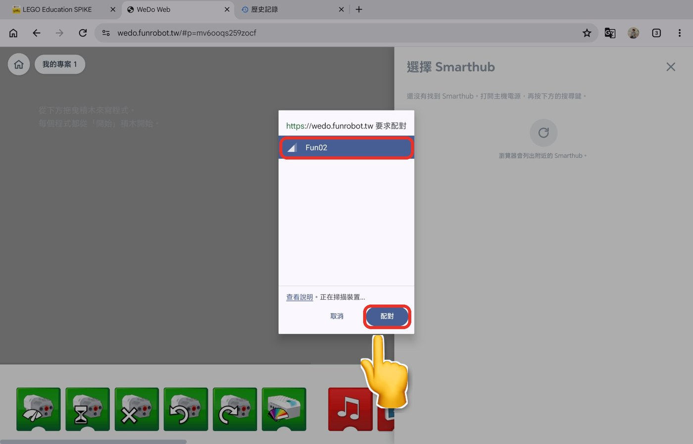
⑥ 右上角的主機圖示顯示主機名稱，就是連上了。
再點一次右上角的主機圖示，可以看到主機在「選擇 Smarthub」清單裡變成綠色。綠色列上會顯示主機名稱和電量；✏️ 可以幫主機改名，紅色 ✕ 是中斷連線。
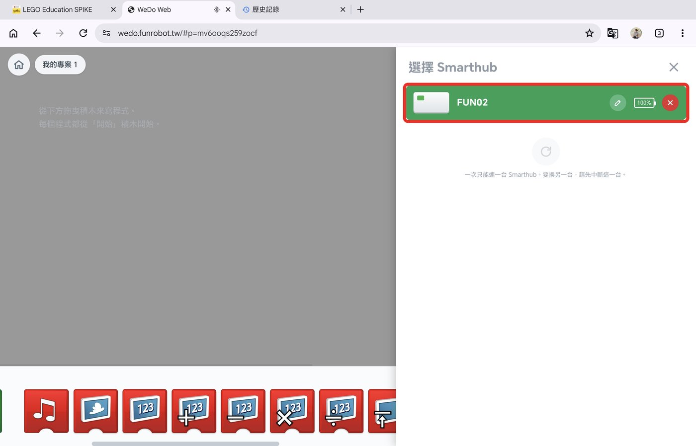
畫面右下角會顯示 Port 1、Port 2 接了什麼（馬達、傾斜感測器、距離感測器）和目前的數值。
開始寫程式
從下方把積木往上拖到畫面中，每個程式都從黃色的「開始」積木開始。點一下「開始」積木就會執行，右下角的紅色方塊是停止。
遇到問題
按 後找不到主機
- 確認主機有開機、電池有電（燈在閃）。
- 確認手機或平板的 藍牙 有打開。
- 到 設定 → 應用程式 → Chrome → 權限，確認「附近的裝置」是允許。
- 一台主機同時只能連一台裝置。請先關掉官方 WeDo App 或其他平板的連線。
- 關掉主機電源再打開，重新搜尋。
按了按鈕沒有任何反應
確認是在 Chrome 裡打開，網址是 https:// 開頭。從 LINE 點開的連結會在 LINE 裡面開，請按右上角選「用 Chrome 開啟」。
馬達不會轉
- 看畫面右下角，Port 1 或 Port 2 有沒有出現馬達圖示。沒有的話，拔插一次馬達的線。
- 確認程式是從「開始」積木開始，並且有點「開始」執行。
聲音感測器沒反應
聲音感測器用的是裝置的麥克風。第一次使用時要按「允許」；如果按了不允許，到 設定 → 應用程式 → Chrome → 權限，打開「麥克風」。
查看連線紀錄
首頁 ⚙ 設定 → 開發者模式選「開」。之後點右上角主機圖示，下方會出現連線紀錄，按「Copy」可以複製下來回報問題。